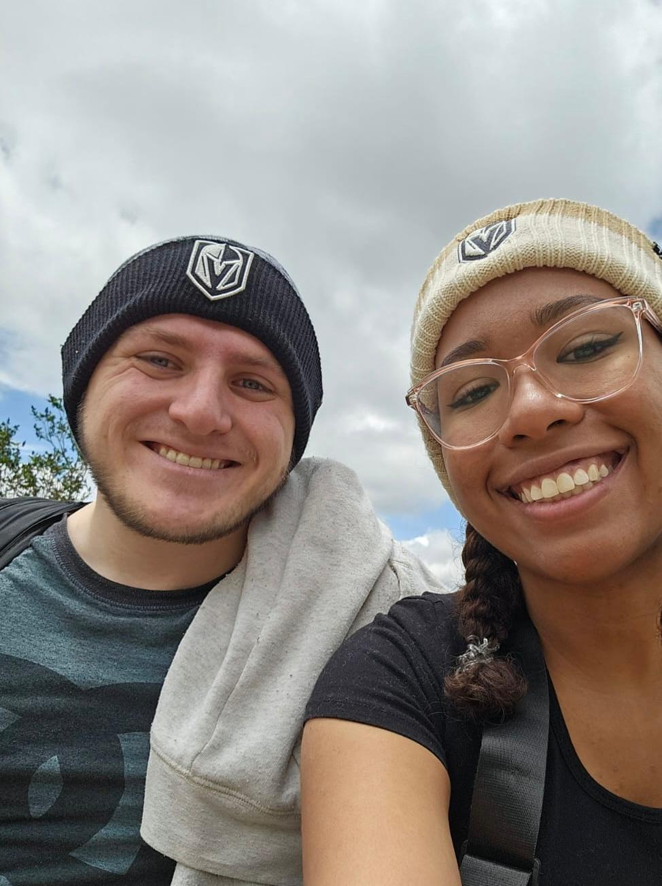

Welcome to WDD 130.
Hello Everyone! My name is Caden Watts, I am from Las Vegas and I live in Lima Peru. I am married and I enjoy playing Hockey, playing the piano, and playing video games. I am currently studying web development to help me get my foot into the programming world and develop several different useful skills.